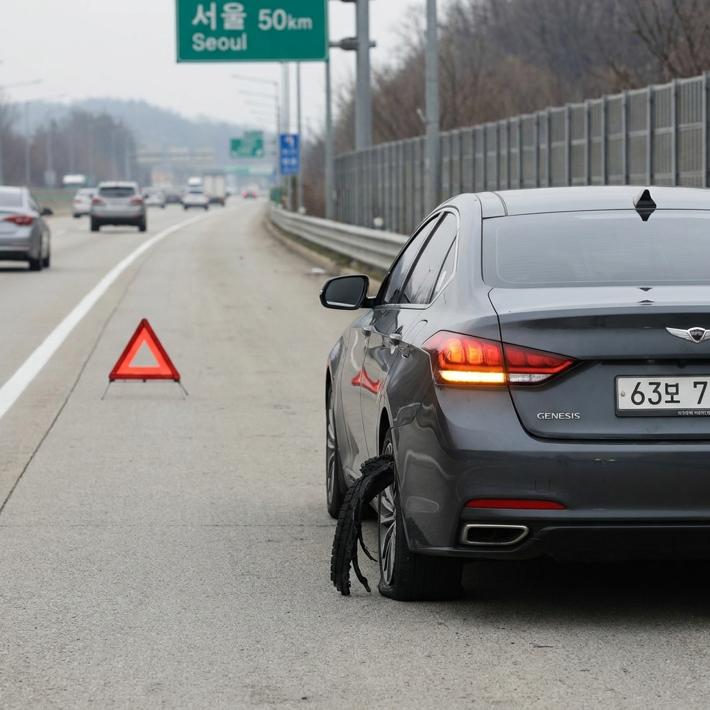
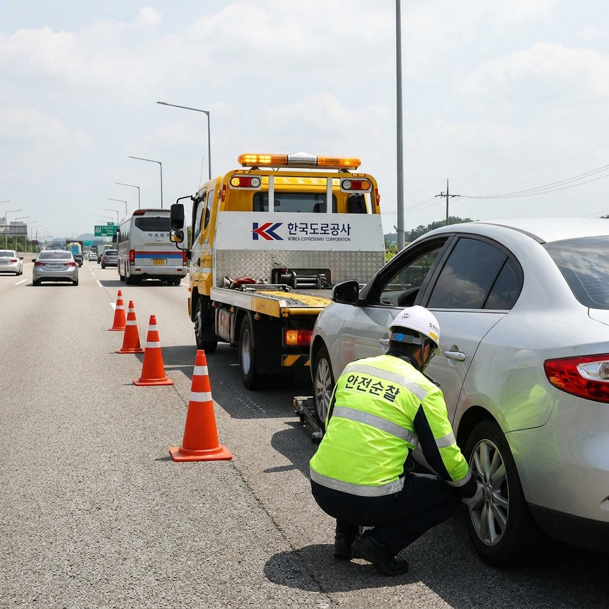

고속도로 주행 중 타이어 펑크·블로우아웃 대처법과 보험사 긴급출동 비용 비교 — 갓길 대피 및 견인 거리 체크리스트
고속도로를 시속 100km 이상으로 주행하던 중 갑작스럽게 '펑'하는 굉음과 함께 타이어가 터지는 블로우아웃(Blowout) 현상은 운전자에게 극심한 공포를 안겨줍니다. 당황하여 급브레이크를 밟거나 급핸들을 조작하면 차량이 전복되거나 2차 추돌 사고로 이어져 돌이킬 수 없는 인명 피해를 낳을 수 있습니다.
또한 갓길에 안전하게 차를 멈추더라도 현장에 번개처럼 나타나는 사설 렉카차의 부당한 강제 견인과 바가지요금 시비에 휘말리기 쉽습니다. 오늘 포스팅에서는 타이어 파열 시 생명을 지키는 긴급 핸들 조작법, 고속도로 2차 사고 방지 행동 요령, 한국도로공사 무료 견인과 보험사 긴급출동 거리·비용 비교표, 사설 견인 거부 체크리스트까지 완벽하게 정리해 드립니다.

고속도로 갓길 안전지대에 정차 후 비상등과 안전 삼각대를 설치한 비상 대처 모습 / AI 제작 이미지
01 | 고속도로 시속 100km 주행 중 타이어 펑크(블로우아웃) 징후
타이어 블로우아웃은 단순한 미세 펑크와 달리, 고속 주행 중 타이어 내부 공기압이 순간적으로 한계에 도달해 타이어 형태가 산산조각 나며 터지는 치명적인 파열 사고입니다.
파열 직전에는 타이어 바닥 면이 울퉁불퉁해지며 차체 하부에서 '두두두두'하는 심한 진동과 소음이 핸들로 전달됩니다. 이어 폭탄이 터지는 듯한 파열음과 함께 차량이 펑크가 난 타이어 쪽으로 급격하게 쏠리는 롤링 현상이 발생합니다.
앞바퀴가 터지면 조향력을 잃어 차가 휘청거리며 중앙분리대나 가드레일 쪽으로 돌진하려 하고, 뒷바퀴가 터지면 차체 뒤쪽이 물고기 꼬리처럼 좌우로 심하게 흔들리는 피시테일(Fish-tail) 현상이 발생합니다.
02 | 타이어 파열 순간 절대 급브레이크를 밟으면 안 되는 이유
타이어가 터졌을 때 운전자가 무의식적으로 범하는 가장 위험한 실수가 바로 브레이크 페달을 바닥까지 세게 밟는 급제동입니다.
이미 한쪽 타이어의 접지력과 회전 균형이 완전히 붕괴된 상태에서 급브레이크를 밟으면, 살아있는 반대편 바퀴에만 강한 제동력이 걸리게 됩니다. 이로 인해 차량의 무게중심이 순간적으로 무너지며 차체가 팽이처럼 빙글빙글 회전하는 스핀(Spin) 현상이나 전복 사고로 직결됩니다.
따라서 타이어가 터졌을 때는 발을 가속 페달(엑셀)에서 서서히 떼면서 엔진 브레이크와 공기 저항으로 차량 속도가 자연스럽게 줄어들도록 유도해야 합니다. 브레이크는 속도가 시속 40~50km 이하로 충분히 떨어진 이후에 부드럽게 밟아야 합니다.
03 | 비상등 켜고 안전하게 갓길로 정차하는 단계별 핸들 조작법
타이어 파열 시 가장 중요한 것은 차량의 직진 방향성을 유지하며 주변 차량에 비상 상황을 신속히 알리는 것입니다.
타이어 블로우아웃 발생 시 4단계 비상 주행 요령
1. 양손으로 핸들을 꽉 잡고 직진 유지: 차체가 쏠리더라도 반대 방향으로 급격하게 꺾지 말고, 힘을 주어 정면을 향하도록 지탱합니다.
2. 즉시 비상점멸등(비상등) 점등: 뒤따르는 후속 차량들이 속도를 줄이고 회피할 수 있도록 즉각 경고 신호를 보냅니다.
3. 가속 페달에서 발을 떼고 속도 감속: 엔진 브레이크로 차량 탄력 주행 속도를 점진적으로 떨어뜨립니다.
4. 우측 사이드미러 확인 후 완만하게 갓길 이동: 속도가 50km/h 이하로 낮아지면 우측 차선으로 완만하게 차선을 변경하여 가장자리 갓길이나 비상주차대에 정차합니다.
04 | 갓길 정차 후 가드레일 밖 대피와 2차 사고 예방 행동 수칙
갓길에 차를 세웠다고 해서 안전이 확보된 것은 결코 아닙니다. 고속도로 갓길 사고의 치사율은 일반 고속도로 사고의 5~6배에 달할 정도로 위험합니다.
차량이 멈추면 탑승자 전원은 비상등을 켜둔 채 즉시 차에서 내려야 합니다. 이때 차 안이나 차 뒤에 머물러 있으면 시속 100km로 돌진하는 졸음운전 차량의 희생양이 될 수 있습니다.
반드시 도로 바깥 가드레일을 넘어 언덕이나 안전한 잔디밭 등 방호벽 뒤편으로 완전히 대피해야 합니다. 대피를 완료한 후에 비로소 스마트폰을 꺼내 도로공사나 보험사에 구조 요청 전화를 걸어야 합니다.

고속도로 갓길 고장 차량을 안전지대로 이동시키는 긴급견인 서비스 현장 / AI 제작 이미지
05 | 트렁크 삼각대와 불꽃신호기 설치 규정과 안전 거리
도로교통법상 고장 차량은 주간에 100m, 야간에 200m 후방에 안전삼각대를 설치하도록 규정되어 있었으나, 삼각대를 설치하러 가다가 치여 숨지는 2차 사고가 잇따르자 법 규정이 완화되었습니다.
현재는 '후방에서 접근하는 자동차의 운전자가 확인할 수 있는 위치'에 삼각대를 설치하도록 개정되었습니다. 만약 주행 차량들의 속도가 너무 빠르고 갓길 폭이 좁아 후방 접근이 위험하다고 판단되면 무리하게 삼각대를 들고 걸어가지 말아야 합니다.
야간의 경우 삼각대 대신 트렁크에 구비해 둔 LED 비상 신호봉이나 불꽃신호기를 가드레일 밖 안전지대에서 후방 차량을 향해 흔들어 경고하는 것이 운전자의 생명을 지키는 최선의 방법입니다.
06 | 견인 서비스 3대 유형 비교표 — 한국도로공사 vs 보험사 vs 사설 렉카
고속도로에서 차량이 멈췄을 때 이용할 수 있는 견인 수단은 크게 3가지가 있습니다. 각각의 비용과 견인 한도를 사전에 알고 있어야 현명한 판단이 가능합니다.
| 구분 |
한국도로공사 긴급견인 |
자동차보험 긴급출동 |
사설 렉카 (민간 견인) |
| 이용 요금 |
완전 무료 (도로공사 부담) |
기본 무료 (연간 5~6회) |
유료 (수십만 원 청구 위험) |
| 견인 거리 |
가장 가까운 안전지대까지
(휴게소, 졸음쉼터, IC 영업소) |
기본 10km 무료
(확대 특약 시 50~60km) |
거리 비례 고액 청구
(구원료·대기료 추가) |
| 신청 방법 |
콜센터 1588-2504 전화 |
가입 보험사 고객센터 앱/전화 |
현장 무단 접근 (동의 금지) |
| 주요 목적 |
2차 사고 방지 및 갓길 탈출 |
단골 카센터·정비소 이동 |
영업 이익 창출 (바가지 주의) |
가장 이상적인 방법은 **한국도로공사 무료 견인(1588-2504)**을 불러 고속도로 갓길에서 가장 가까운 휴게소나 졸음쉼터로 차를 먼저 옮긴 뒤, 그 안전한 장소에서 본인의 자동차보험 긴급출동을 불러 집 근처 정비소로 이동하는 '2단계 견인 전략'입니다.
07 | 한국도로공사 1588-2504 무료 긴급견인 서비스 이용 조건과 한계
한국도로공사는 고속도로 본선 및 갓길 정차 차량으로 인한 2차 대형 참사를 막기 위해 '긴급견인 서비스'를 100% 무료로 상시 제공하고 있습니다.
이 서비스는 일반 승용차, 16인승 이하 승합차, 1.4톤 이하 화물차를 대상으로 제공됩니다. 비용은 도로공사가 전액 부담하며, 운전자는 1원도 낼 필요가 없습니다.
단, 도로공사 무료 견인의 목적은 정비소까지 데려다주는 것이 아니라 '고속도로 본선 갓길이라는 위험 구역에서 인근 안전지대(휴게소·졸음쉼터·영업소 밖)까지 탈출시키는 것'으로 한정됩니다. 따라서 안전지대에 도착한 후 정비소 이동은 개인 보험사 견인을 연계해야 합니다.
08 | 자동차보험 긴급출동 무료 견인 거리(10km vs 50km 특약)와 초과 요금 계산
대부분의 운전자가 자동차보험 가입 시 긴급출동 특약에 가입되어 있습니다. 하지만 기본 약관의 무료 견인 거리가 몇 km인지 모르는 경우가 많습니다.
기본 특약의 무료 견인 거리는 편도 10km에 불과합니다. 고속도로는 나들목(IC) 사이의 거리만 해도 10km를 훌쩍 넘는 경우가 많아, 10km 초과 시 1km당 약 2,000원~2,500원의 추가 요금이 운전자에게 직접 청구됩니다.
견인거리 확대 특약(50~60km) 가입 권장
보험 갱신 시 1년에 불과 몇천 원(약 3,000원~5,000원)만 추가하면 무료 견인 거리를 50km 또는 60km로 늘려주는 '견인거리 확대 특약'에 가입할 수 있습니다. 지방 장거리 고속도로 주행이 잦다면 반드시 이 특약을 넣어두어야 견인비 폭탄을 방지할 수 있습니다.
09 | 사설 렉카(사설 견인차) 갈고리 걸기 전 바가지 요금 거부 체크리스트
고속도로에서 사고나 고장이 발생하면 경찰이나 도로공사보다 민간 사설 렉카차가 귀신같이 먼저 도착합니다. 이들은 경황이 없는 운전자에게 다가와 "도로가 위험하니 차를 조금만 빼주겠다"며 차에 갈고리를 걸려 합니다.
사설 렉카 피해 방지 실전 대응 수칙
- 절대 견인 고리(갈고리)를 걸지 못하게 강력 거부: "보험사 출동 불렀으니 손대지 마세요"라고 명확하게 육성으로 거부 의사를 밝히세요.
- 스마트폰으로 거부 음성 녹음 및 현장 촬영: 강제로 갈고리를 걸거나 차량을 만지려 하면 거부 음성을 녹음하고 견인차량 번호판을 동영상으로 촬영하세요.
- 서명 요구에 절대 사인 금지: 간이 영수증이나 견인 동의서에 함부로 서명하면 국토교통부 고시 요금의 5~10배가 넘는 수십만 원의 구원료, 특수장비 사용료가 청구됩니다.
- 도로공사 무료 견인 요청 상태임을 통보: "1588-2504 도로공사 무료 견인 오는 중입니다"라고 말하면 사설 렉카는 대부분 현장에서 철수합니다.
10 | 계절별 적정 타이어 공기압 점검과 마모 한계선 자가진단법
블로우아웃 사고를 사전에 완벽하게 예방하는 유일한 방법은 정기적인 타이어 상태 점검입니다. 특히 기온이 급격히 떨어지는 가을철 환절기에는 공기의 부피가 수축하여 타이어 공기압이 자연적으로 10~20% 감소합니다.
공기압이 부족한 상태에서 고속으로 달리면 타이어가 물결치듯 찌그러지는 '스탠딩 웨이브(Standing Wave)' 현상이 발생하며 급격한 마찰열로 인해 타이어가 폭발합니다. 따라서 차량 운전석 문 안쪽 스티커에 표기된 표준 공기압보다 약 5~10% 높게(보통 36~38 psi) 유지하는 것이 안전합니다.
또한 100원짜리 동전을 타이어 트레드 홈에 거꾸로 꽂았을 때, 이순신 장군의 사모(모자)가 절반 이상 보인다면 마모 한계선에 도달한 것이므로 장거리 고속도로 주행 전 반드시 타이어를 신품으로 교체해야 합니다.
📌 함께 읽으면 좋은 가을 나들이 & 생활 팁
#타이어블로우아웃
#고속도로타이어펑크
#한국도로공사긴급견인
#보험사긴급출동견인
#사설렉카바가지예방
#고속도로갓길사고
#견인거리확대특약
#타이어공기압점검
#2차사고예방수칙
#자동차비상대처법